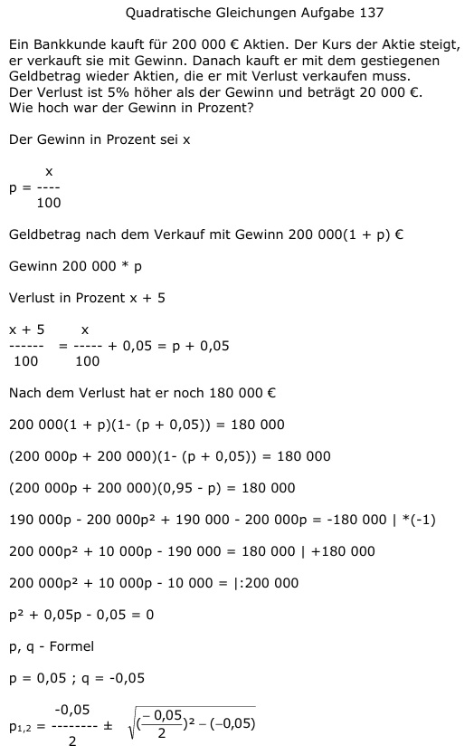

Aufgabe 137 Ein Bankkunde kauft für 200 000 € Aktien. Der Kurs der Aktie steigt,er verkauft sie mit Gewinn. Danach kauft er mit dem gestiegenen Geldbetrag wieder Aktien, die er mit Verlust verkaufen muss. Der Verlust ist 5% höher als der Gewinn und beträgt 20 000 €. Wie hoch war der Gewinn in Prozent? Der Gewinn in Prozent sei x x p = ---- 100 Geldbetrag nach dem Verkauf mit Gewinn 200 000(1 + p) € Gewinn 200 000 * p Verlust in Prozent x + 5 x + 5 x ------ = ----- + 0,05 = p + 0,05 100 100 Nach dem Verlust hat er noch 180 000 € 200 000(1 + p)(1- (p + 0,05)) = 180 000 (200 000p + 200 000)(1- (p + 0,05)) = 180 000 (200 000p + 200 000)(0,95 - p) = 180 000 190 000p - 200 000p2 + 190 000 - 200 000p = = -180 000 |*(-1) 200 000p2 + 10 000p - 190 000 = 180 000 |+180 000 200 000p2 + 10 000p - 10 000 = |:200 000 p2 + 0,05p - 0,05 = 0 p, q - Formel p = 0,05 ; q = -0,05  p1,2 = -0,025 ± 0,225 p1 = -0,025 + 0,225 = 0,2 = 20% p2 = -0,025 - 0,225 = -0,25% keine Lösung, negativer Prozentsatz